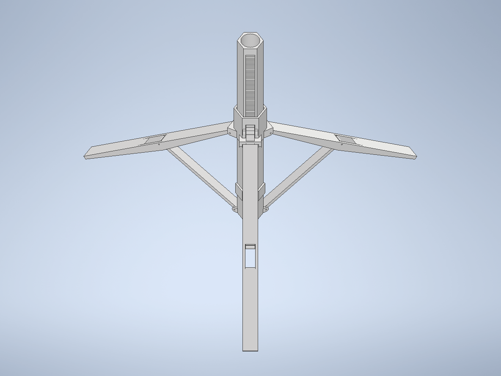
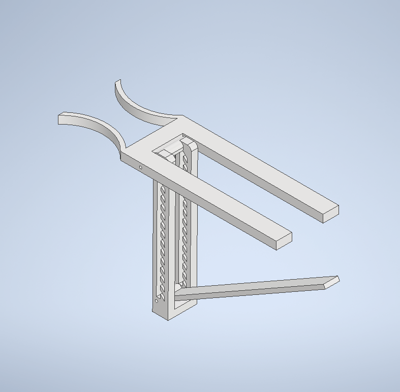
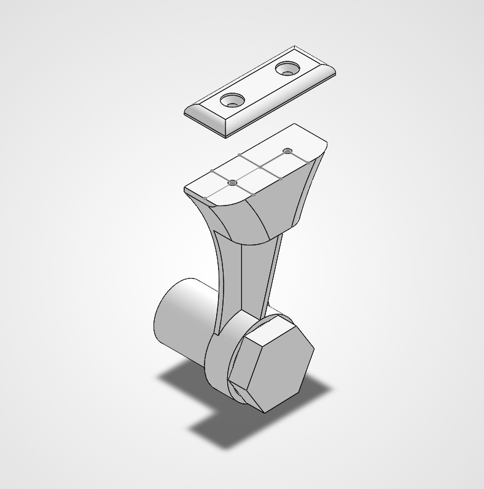
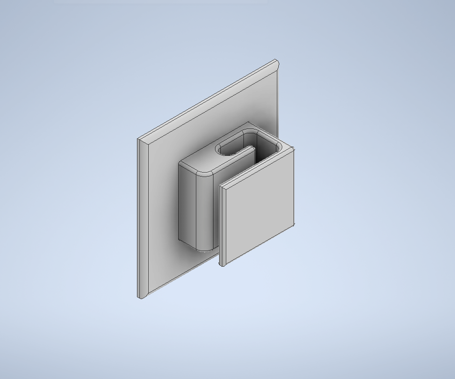
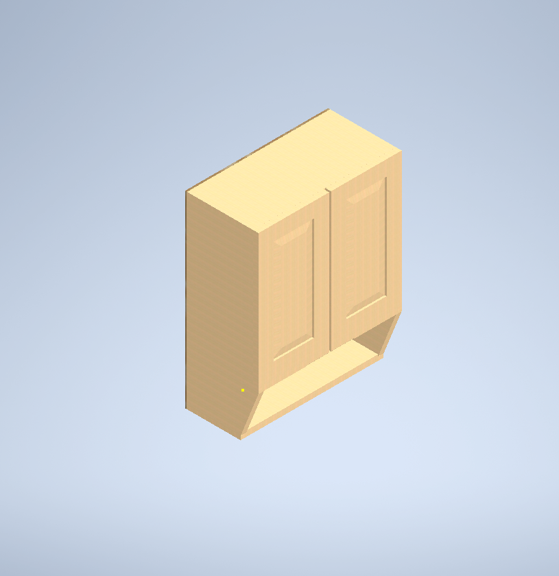
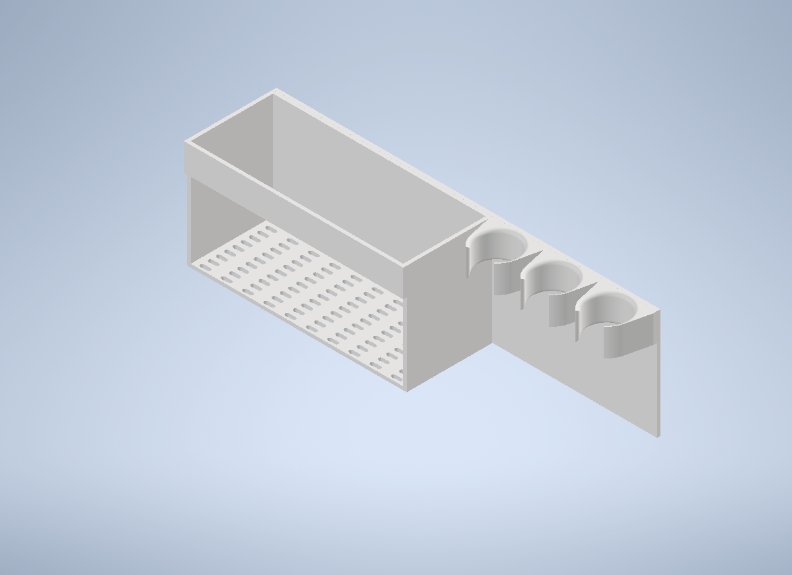
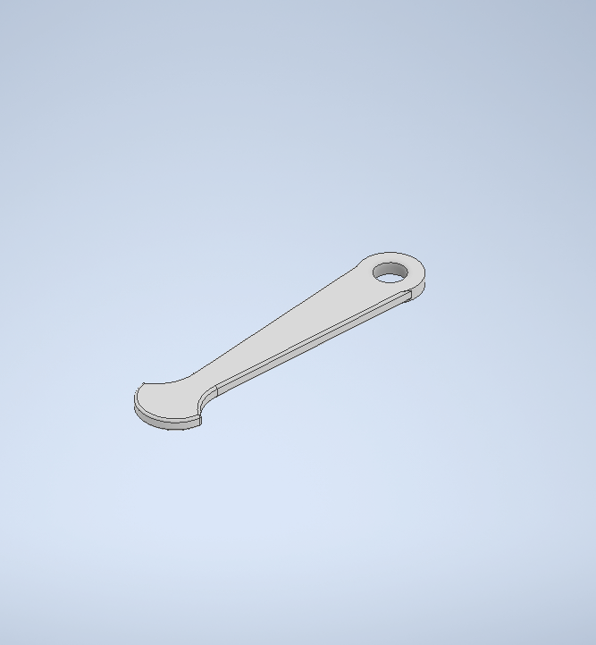

MECHANICAL / PHYSICAL / CAD
Mechanical
Physical design centered on human use, constraints, and buildable geometry.
Related Projects

Retractable Cane Stabilizer
A 3D-printed attachment that keeps a cane upright without changing normal walking ergonomics.

Portable Pocket Cane Holder
A collapsible mobility-aid C-frame table clamp with a variable fulcrum and detent locking system.

Twin-Threaded Paper Towel Holder
A SolidWorks table-mounted paper towel holder that uses threaded brackets and a removable 3D-printed bolt as the towel dowel.

Passive Geometric Cable Holder
A static rectangular spiral cable holder securing wires through natural geometry and rigidity without material fatigue.

Wireless Charging Cradle
A custom wireless charging cradle optimized for specific phone and charger geometry.

Cabinet Design
A parametric cabinet assembly design prepared in Autodesk Inventor.

Compliant Table Cane Holder
A table-edge clip utilizing compliant mechanism design to secure a cane.

Dry Erase Marker Holder
A simple 3D-printed storage and organizer tray for dry erase markers.

Nutcracker
A custom mechanical tool designed to securely hold hazelnuts in place for easy breaking.